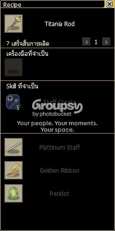
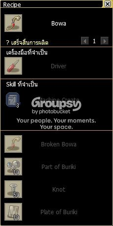
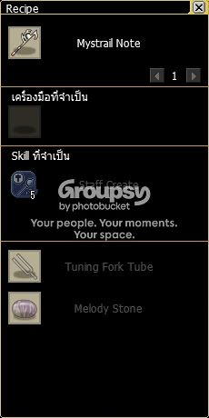
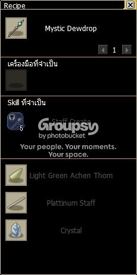
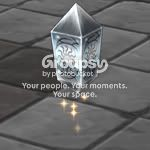

คทานะครับ
เลเวล70
Titania Rod

Plattinum staff ได้จาก(ตามภาพครับ)

ซึ่งหาPlattinum partจากบอสหุ่นยนต์Buri King MkIIที่Utena River

หรือจะหาPlattinum lumpจากกล่องไม้เบอร์12
หรืออื่นๆ(ไม่รู้หาจากไหนบ้าง

)
เพิ่มเติม: Plattinum lump ตกได้ง่ายจาก

หาม่อนได้ที่แมปทะเลทรายเอหรือแมปที่อยู่ก่อนถึงที่รับเควสสู้มังกรอีมิลครับ
ลองไปตีมาตกง่ายดีนะครับ(แต่ม่อนโหด)
Golden Ribbon
ดรอบจาก
Ramrus

Sheveris

Tuboggy

กล่องสมบัติเบอร์17
Peridot
Green Crystal2 + Cut out machine(4)
Green Crystal2 ไม่แน่ใจหาจากไหน
Cut out Machine ใช้ Pebble 4 อัน(หาจากก้อนหินทั่วๆไป) ใช้สกิล Drug Create
หรือ Peridot ดรอปจาก
Recruit Gecko

Gecko
 เลเวล70
เลเวล70
Tiny Rod
ได้จากการเอาเหรียญไทนี่ไปแลกโจรสลัดไทนี่ที่เกาะไทนี่ครับ
เลเวล80
Bowa
วิธีทำครับ

Broken Browa
Lump of machine ที่ Light Tower
กล่องสมบัติเบอร์14
Part of Buriki
หาจาก มอนเตอร์หุ่นยนต์ Buriki หรือมอนเตอร์ตุ๊กตาไม้
Knot
ซื้อที่์NPCในดาวน์ทาวน์
Plate of Buriki
หาจาก มอนเตอร์หุ่นยนต์ Buriki
เลเวล80
Mystrail Note
วิธีทำครับ

Tuning fork tube
คอนเทน1 จากดันตะวันออกชั้น5(ชั้นบอสปลา)
คอนเทน2 จากเหมืองชั้น3
Lump of machine จากLight Tower
ดรอปจาก

มอนสเตอร์ฮาร์ปี้ ในLight Tower
คอนเทน6
Melody stone
Red Crystal3 + Cut out machine(4)
Red Crystal3 หาจาก Ancient Coal Mine(ดันบอสหมีม่วง) โดยใช้ทาทาไปตีMineral Lump(บางทีมันตกเป็นMelody Stoneเลย)
Cut out Machine ใช้ Pebble 4 อัน(หาจากก้อนหินทั่วๆไป) ใช้สกิล Drug Create
เลเวล90
Mystic Dewdrop
วิธีทำ

Light Green Archen Thorn ได้จากGreen Crystal Archen ในดันไมไม ใช้ปราญชน์หิน ทาทา(ตกยากมาก)
Plattinum staff ได้จาก(ตามภาพครับ)
ซึ่งหาPlattinum partจากบอสหุ่นยนต์Buri King MkIIที่Utena River
หรือจะหาPlattinum lumpจากกล่องไม้เบอร์12
หรืออื่นๆ(ไม่รู้หาจากไหนบ้าง
)
เพิ่มเติม: Plattinum lump ตกได้ง่ายจาก
หาม่อนได้ที่แมปทะเลทรายเอหรือแมปที่อยู่ก่อนถึงที่รับเควสสู้มังกรอีมิลครับ
ลองไปตีมาตกง่ายดีนะครับ(แต่ม่อนโหด)
Crystal
หาจากยักษ์ Cyclop, Crystal Archen,
หรือหา Crystal Piece 6 ชิ้น จาก

ZirconI

ZirconII
Zircon3

Corandom

Obcidian
ซึ่งวิธีผสมนี้ทำยากมากแนะนำไม่ให้ทำดีกว่าครับ
แต่ทำเควสอาวุธ90
http://game.sanook.com/gameupdate/stechnic_08341.phpดีกว่า
ตกจากบอส

Amory Guard
มันตกของเป็นปาร์ตี้แล้วก็จะได้ถุงอาวุธข้างในสุ่มอาวุธ90ทุกอย่างครับ
แฮ่กๆเหนื่อยๆ

ขอพักแปปนะครับเดี๋ยวมาต่อพิณ
เครดิต:กระทู้ในหมวดItemหลายกระทู้มากๆครับ